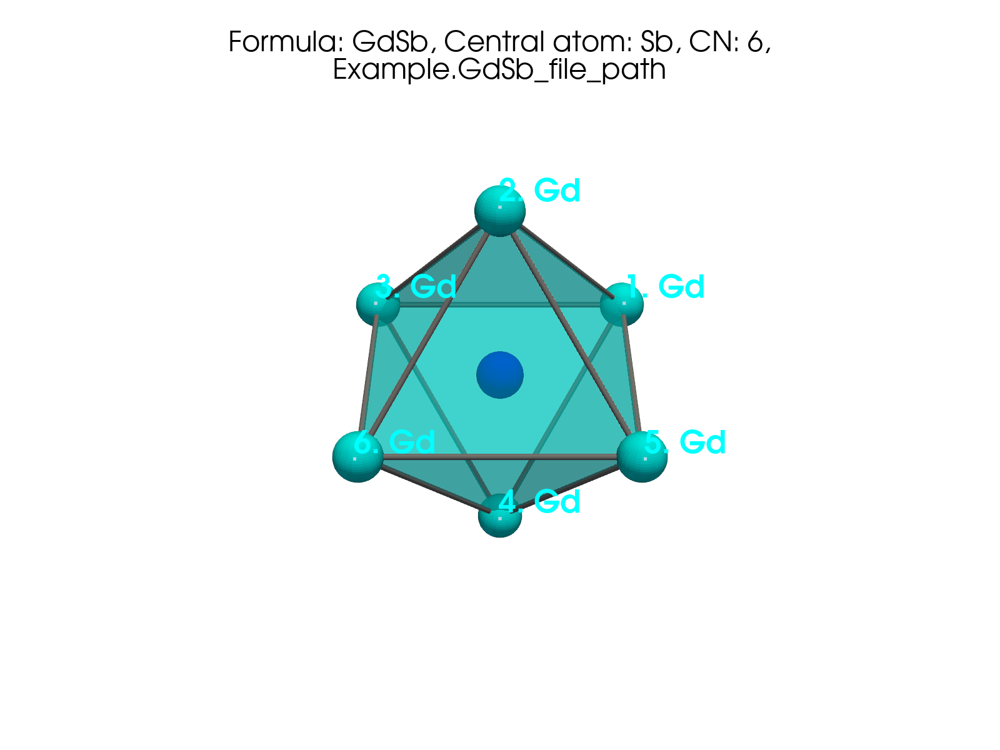
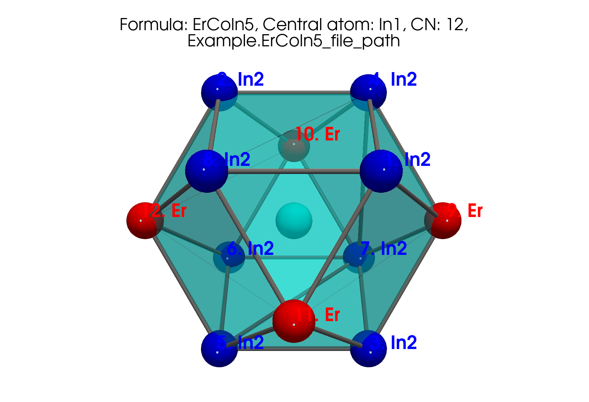

Parse physical features from a .cif#
This is the main use of cifkit: turn one crystallographic .cif file
into geometry and site-environment numbers you can plot, compare, or
feed into a featurizer / machine-learning model.
What you get, in order:
Useful structure facts (parse)
Interatomic distances
Coordination numbers - how each method decides CN (this page)
Polyhedron metrics (volume, packing efficiency, …)
Bond fractions and site mixing
Optional polyhedron plot (static PNG or interactive 3D)
Not from the .cif: composition / elemental descriptors (atomic
weight, electronegativity, Mendeleev number, …) come from the separate
OLED table in OLED tutorial - curated Oliynyk elemental data
from the dataset paper (Data in Brief), not values read out of the
CIF file.
{kind=link}

Fig. 2 Static export. Sb-centered polyhedron in GdSb (CN=6) from
plot_polyhedron on the packaged demo file.#
Interactive polyhedron (drag to rotate)#
Same shell as above - real neighbor coordinates from
Example.GdSb_file_path, method dist_by_shortest_dist, CN = 6.
Use this when a static PNG is not enough to see the octahedron.
In your own notebook or script you get a live PyVista window with:
cif.plot_polyhedron("Sb", is_displayed=True) # interactive desktop window
1. Load a CIF and see what was parsed#
import pandas as pd
from cifkit import Cif, Example
cif = Cif(Example.GdSb_file_path)
props = pd.DataFrame(
[
("file_name", cif.file_name),
("formula", cif.formula),
("structure", cif.structure),
("space_group_name", cif.space_group_name),
("space_group_number", cif.space_group_number),
("unitcell_lengths", cif.unitcell_lengths),
("unitcell_angles (rad)", cif.unitcell_angles),
("site_labels", cif.site_labels),
("unique_elements", sorted(cif.unique_elements)),
("composition_type", cif.composition_type),
("tag", cif.tag),
("db_source", cif.db_source),
("unitcell_atom_count", cif.unitcell_atom_count),
("supercell_atom_count", cif.supercell_atom_count),
],
columns=["attribute", "value"],
)
print(props.to_string(index=False))
attribute |
value |
|---|---|
file_name |
GdSb.cif |
formula |
GdSb |
structure |
NaCl |
space_group_name |
Fm-3m |
space_group_number |
225 |
unitcell_lengths |
[6.21, 6.21, 6.21] |
unitcell_angles (rad) |
[1.5708, 1.5708, 1.5708] |
site_labels |
[‘Sb’, ‘Gd’] |
unique_elements |
[‘Gd’, ‘Sb’] |
composition_type |
2 |
tag |
rt |
db_source |
PCD |
unitcell_atom_count |
8 |
supercell_atom_count |
1000 |
By default the constructor preprocesses for gemmi compatibility, builds
a 3×3×3 supercell, and defers coordination work until you ask
(compute_CN=False).
db_source is detected from the file (here PCD). cifkit is tested
against common crystallographic exports - ICSD, COD, PCD,
Materials Project-style (MP), CCDC/CSD, and Materials Studio
(MS) - with source-specific fixes (for example ICSD copyright lines,
PCD author loops). Mixed folders can share one pipeline.
2. Interatomic distances#
Distances come from the supercell neighbor search - before coordination methods run.
print("shortest_distance:", cif.shortest_distance)
print("shortest_site_pair_distance:", cif.shortest_site_pair_distance)
print("shortest_bond_pair_distance:", cif.shortest_bond_pair_distance)
shortest_distance: 3.105
shortest_site_pair_distance: {'Sb': ('Gd', 3.105), 'Gd': ('Sb', 3.105)}
shortest_bond_pair_distance: {('Gd', 'Sb'): 3.105, ('Gd', 'Gd'): 4.391, ('Sb', 'Sb'): 4.391}
As a table - shortest distance between each element-pair type:
bond_d = pd.DataFrame(
[
{"pair": str(k), "shortest (Å)": v}
for k, v in cif.shortest_bond_pair_distance.items()
]
)
print(bond_d.to_string(index=False))
pair |
shortest (Å) |
|---|---|
(‘Gd’, ‘Sb’) |
3.105 |
(‘Gd’, ‘Gd’) |
4.391 |
(‘Sb’, ‘Sb’) |
4.391 |
Unique neighbor distances from site Gd (first shell and beyond):
seen = set()
rows = []
for label, dist, *_ in cif.connections["Gd"]:
key = (label, round(dist, 4))
if key in seen:
continue
seen.add(key)
rows.append({"neighbor": label, "distance (Å)": round(dist, 4)})
dist_table = pd.DataFrame(rows)
print(dist_table.head(8).to_string(index=False))
neighbor |
distance (Å) |
|---|---|
Sb |
3.105 |
Gd |
4.391 |
Sb |
5.378 |
Gd |
6.21 |
Sb |
6.943 |
Gd |
7.606 |
Gd |
8.782 |
Sb |
9.315 |
These ordered shells are the raw input for every CN method.
3. Coordination numbers - what they are and how each is determined#
What is CN here?#
For each crystallographic site label, cifkit decides how many neighbors belong in the first coordination shell. That integer is the coordination number (CN). The shell defines the vertices of the coordination polyhedron (edges, faces, volume, packing efficiency).
CN is not a single universal number in messy intermetallics: different reasonable normalizations of distance can put the “largest gap” in different places. cifkit therefore runs up to four methods and then picks a best method per site using polyhedron geometry.
Algorithm (same skeleton for every method)#
For each site label:
Order neighbors by increasing interatomic distance (from the supercell search; first ~20 neighbors are considered).
Normalize each neighbor distance by a method-specific scale (see table below). Sorted normalized values form a step-like curve.
Find the largest gap between consecutive normalized distances. The index of that gap is the CN: keep the first N neighbors, drop everything beyond the gap.
Those N neighbors are the shell used for bond fractions and polyhedron metrics for that method.
If radius data are missing or the site is not full occupancy, only
dist_by_shortest_dist runs; otherwise all four methods run.
The four methods (what the scale is)#
Method key |
Normalize each neighbor distance by… |
Intuition |
|---|---|---|
|
the site’s shortest neighbor distance |
Pure geometry: “how many times longer than the nearest bond?” |
|
sum of CIF radii of the central + neighbor elements |
Bonds scaled by tabulated elemental sizes |
|
sum of refined CIF radii for the pair |
Same idea after a structure-aware radius tweak |
|
sum of Pauling CN12 metallic radii |
Metallic-radius scale (CN = 12 reference) |
Radii for the last three methods come from cifkit’s elemental radius tables (not from OLED’s full property set, though CIF/Pauling radii also appear there as elemental columns). The geometry CN is always computed from the CIF structure + these scales.
Run it and read the per-method table#
cif.compute_CN() # or Cif(path, compute_CN=True)
rows = []
for site, methods in cif.CN_max_gap_per_site.items():
for method, d in methods.items():
rows.append(
{"site": site, "method": method, "CN": d["CN"], "max_gap": d["max_gap"]}
)
print(pd.DataFrame(rows).to_string(index=False))
site |
method |
CN |
max_gap |
|---|---|---|---|
Sb |
dist_by_shortest_dist |
6 |
0.414 |
Sb |
dist_by_CIF_radius_sum |
6 |
0.567 |
Sb |
dist_by_CIF_radius_refined_sum |
6 |
0.581 |
Sb |
dist_by_Pauling_radius_sum |
6 |
0.464 |
Gd |
dist_by_shortest_dist |
6 |
0.414 |
Gd |
dist_by_CIF_radius_sum |
18 |
0.441 |
Gd |
dist_by_CIF_radius_refined_sum |
18 |
0.453 |
Gd |
dist_by_Pauling_radius_sum |
18 |
0.366 |
How to read this: for Sb every method agrees (CN = 6). For Gd the shortest-distance method finds a gap after 6 neighbors, while radius-based methods find a larger gap after 18 - classic rock-salt behavior where the second shell is still close on some scales. That is why cifkit keeps all four results and then chooses a best method.
How the “best” method is chosen#
For each method that produced a CN ≥ 4, cifkit builds the convex hull of
the shell neighbors and measures how far the central atom sits from
the average of the vertex positions. The method with the smallest
that distance is method_used in CN_best_methods (most “centered”
polyhedron). Metrics (volume, packing efficiency, faces, …) are reported
for that winning method only.
Low-level helpers: Coordination API.
4. Polyhedron metrics (best method)#
best = pd.DataFrame(
[
{
"site": site,
"method_used": m["method_used"],
"CN (vertices)": m["number_of_vertices"],
"edges": m["number_of_edges"],
"faces": m["number_of_faces"],
"volume": round(m["volume_of_polyhedron"], 3),
"packing_eff": round(m["packing_efficiency"], 3),
}
for site, m in cif.CN_best_methods.items()
]
)
print(best.to_string(index=False))
site |
method_used |
CN (vertices) |
edges |
faces |
volume |
packing_eff |
|---|---|---|---|---|---|---|
Sb |
dist_by_shortest_dist |
6 |
12 |
8 |
39.914 |
0.605 |
Gd |
dist_by_shortest_dist |
6 |
12 |
8 |
39.914 |
0.605 |
Octahedra (6 / 12 / 8) with packing efficiency 0.605 - rock salt.
method_used is the winner of the center-to-average test above.
Neighbors in the CN shell for Gd (min-dist method):
conns = cif.CN_connections_by_min_dist_method["Gd"]
neighbors = pd.DataFrame(
[
{"i": i + 1, "neighbor": c[0], "distance (Å)": round(c[1], 4)}
for i, c in enumerate(conns)
]
)
print(neighbors.to_string(index=False))
i |
neighbor |
distance (Å) |
|---|---|---|
1 |
Sb |
3.105 |
2 |
Sb |
3.105 |
3 |
Sb |
3.105 |
4 |
Sb |
3.105 |
5 |
Sb |
3.105 |
6 |
Sb |
3.105 |
5. Bond fractions and site mixing#
bonds = pd.DataFrame(
[
{"pair": str(k), "fraction": v}
for k, v in cif.CN_bond_fractions_by_min_dist_method.items()
]
)
print(bonds.to_string(index=False))
print("site_mixing_type:", cif.site_mixing_type)
pair |
fraction |
|---|---|
(‘Gd’, ‘Sb’) |
1.0 |
site_mixing_type: full_occupancy
Mixing info at the label-pair level is also available as
mixing_info_per_label_pair (useful when sites are partially occupied
or mixed).
6. Render the polyhedron#
for label in cif.site_labels:
cif.plot_polyhedron(label, is_displayed=False, output_dir="polyhedrons")
# → GdSb_Sb.png, GdSb_Gd.png
Mode |
How |
|---|---|
Static PNG (docs, papers) |
|
Interactive desktop (PyVista) |
|
Interactive in these docs |
iframe widget above (same GdSb / Sb shell) |
A richer polyhedron from the JOSS paper (ErCoIn₅, In1, CN=12):
{kind=link}

Fig. 3 JOSS Figure 1 (left). ErCoIn₅ around In1 (CN=12).#
API reference#
Cif- parse, distances, mixingCoordination helpers - CN methods, geometry
What else?#
Topic |
Where |
|---|---|
Radii used in CN methods ( |
|
Site mixing types beyond full occupancy |
|
Folder-level CN / structure histograms before ML |
|
Elemental properties for ML (OLED table - not from the CIF) |
|
Downstream geometry featurizer built on cifkit |
Next#
Statistics over many CIFs - filter, histograms, sort a folder
OLED - elemental / composition features (separate curated table)
Notes (demo data, tables, citation)#
Numbers on this page are real outputs on the packaged GdSb demo (
Example.GdSb_file_path).Tables in the walkthroughs are built with pandas → Markdown so you can copy the same pattern into a notebook. They show geometry features from the CIF, not elemental property rows (those live in OLED / Data in Brief).
If these geometry features were useful, consider citing cifkit (JOSS 10.21105/joss.07205; BibTeX in CITATION.txt). Full publication list: home page.